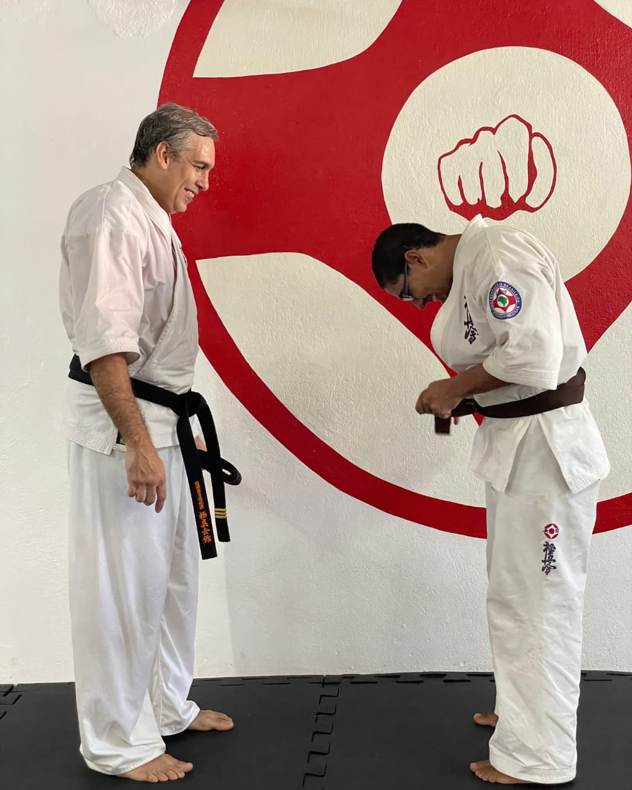
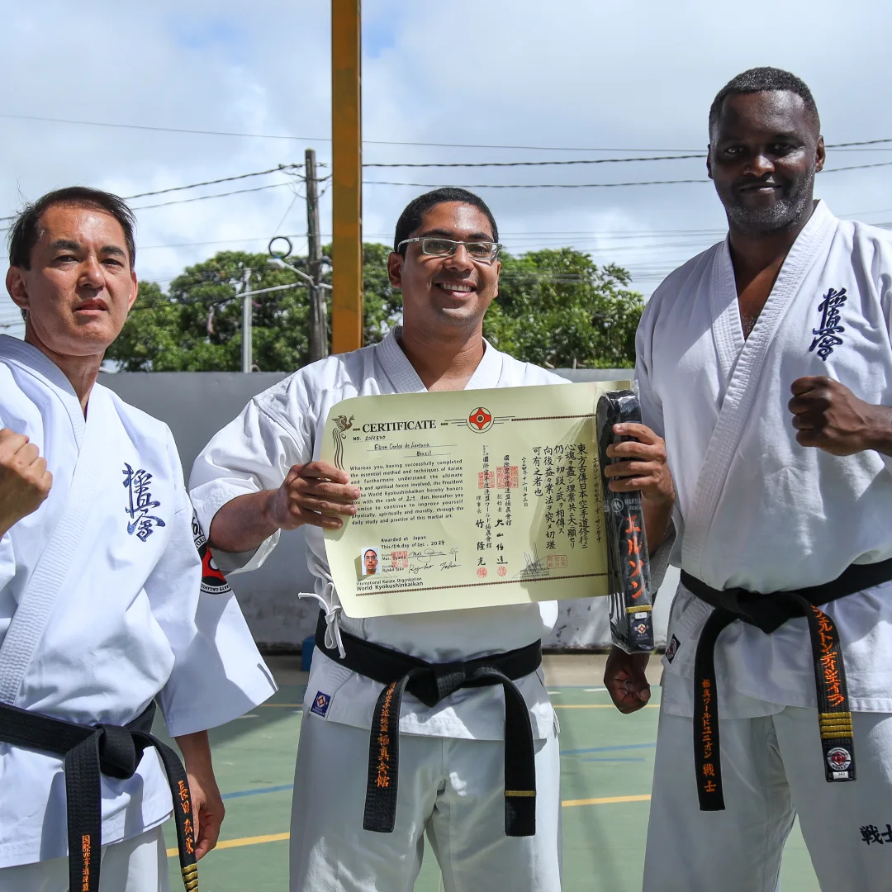
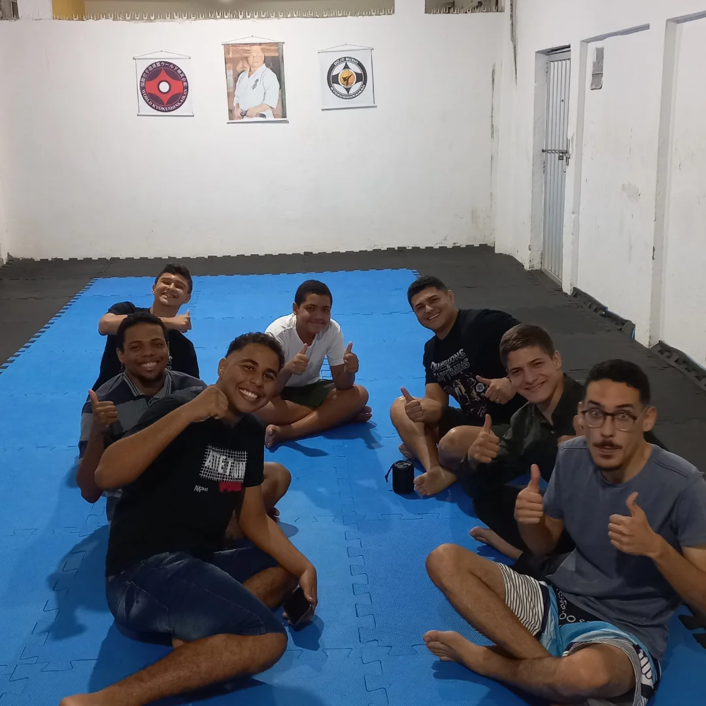
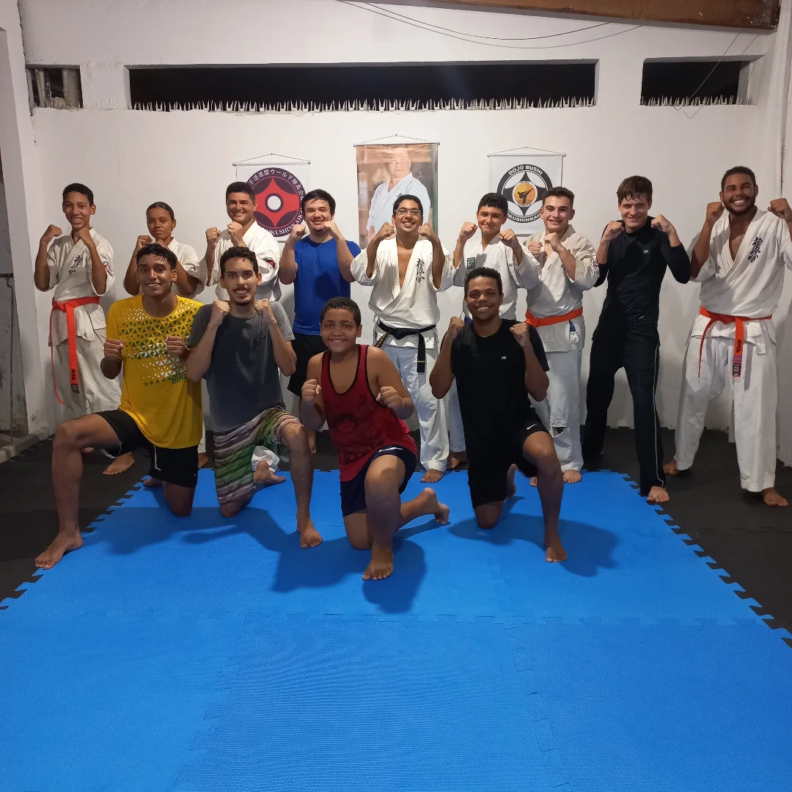
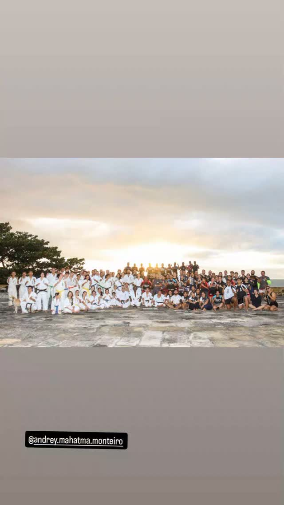
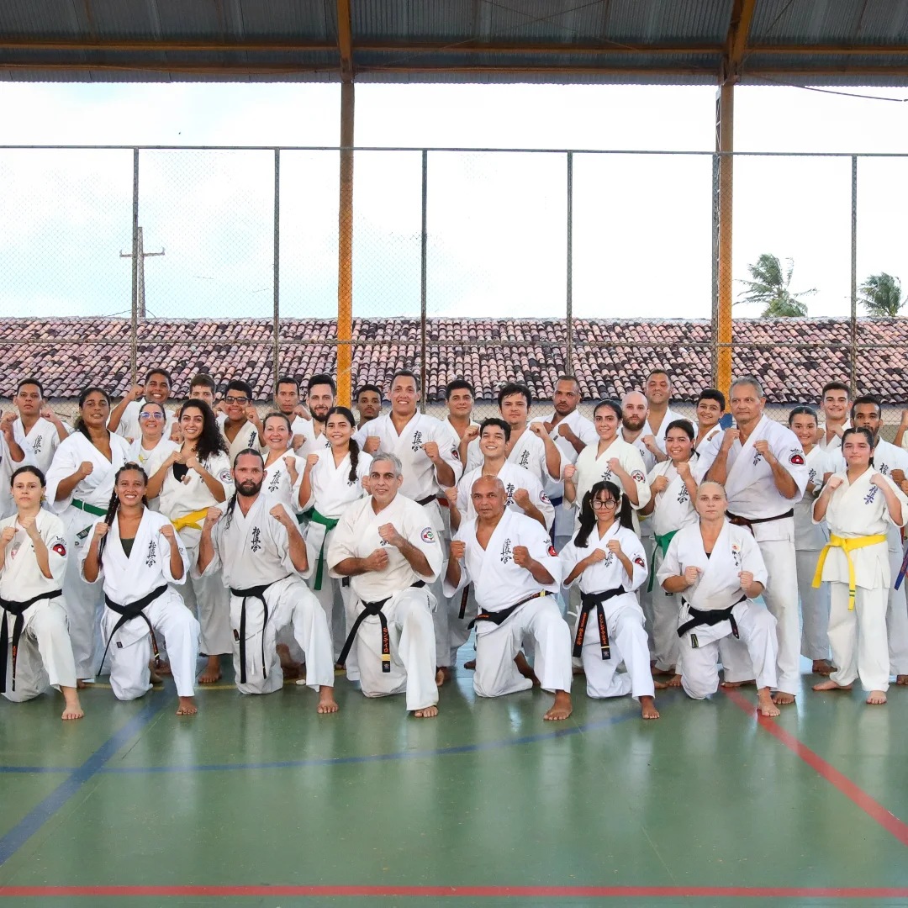
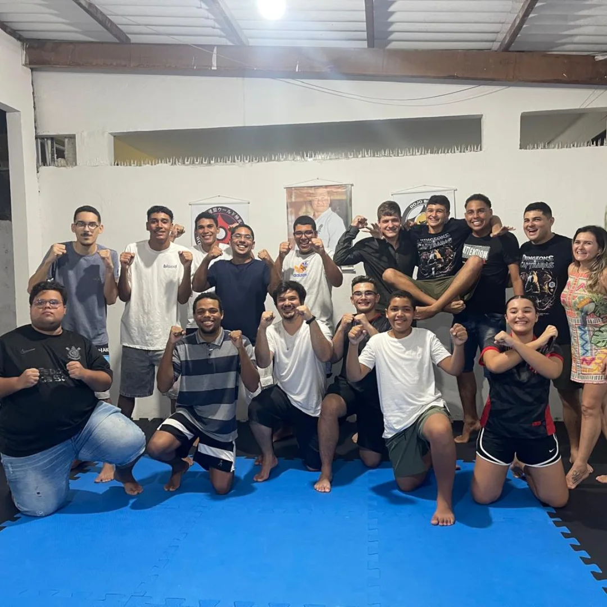

Descubra a Força do Karate Tradicional
Mais que uma academia, somos um Dojo de tradição onde o espírito do Karate Kyokushin é cultivado com disciplina e respeito.
Do iniciante ao avançado, cada aluno mergulha nas raízes do Karate através de uma prática dedicada ao Kihon, Kata e Kumite.
OSU!

Nossa História em Imagens
Momentos marcantes do Dojo Bushi





Horários de Treino
Aulas para todas as idades e níveis
🥋 Crianças
Segunda a Sexta
17:00 - 18:00
🥊 Adolescentes
Segunda a Sexta
18:00 - 19:00
💪 Adultos
Segunda a Sexta
19:00 - 21:00
🏆 Avançados
Segunda a Sexta
20:00 - 22:00